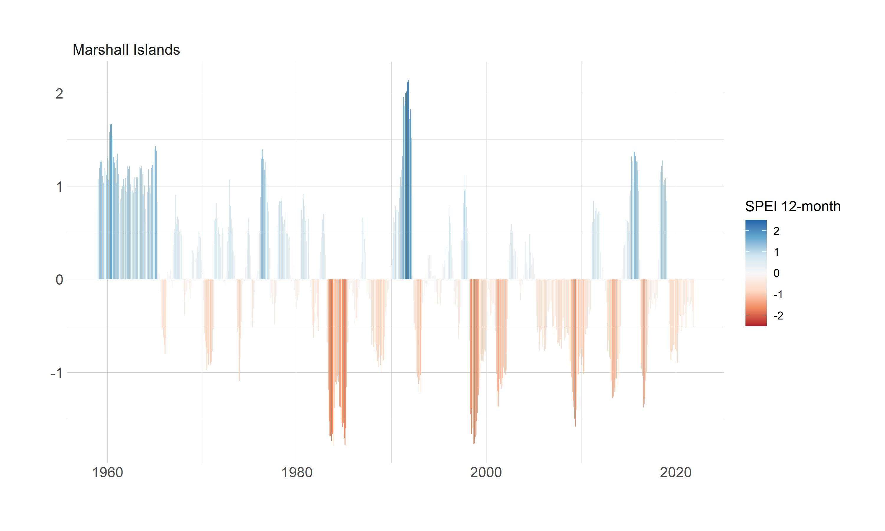
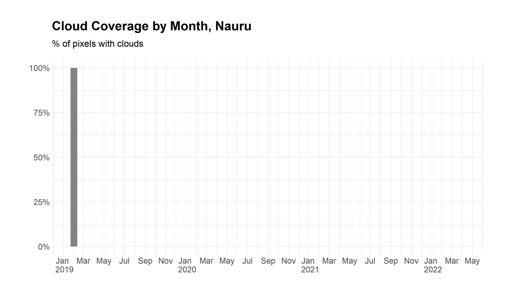
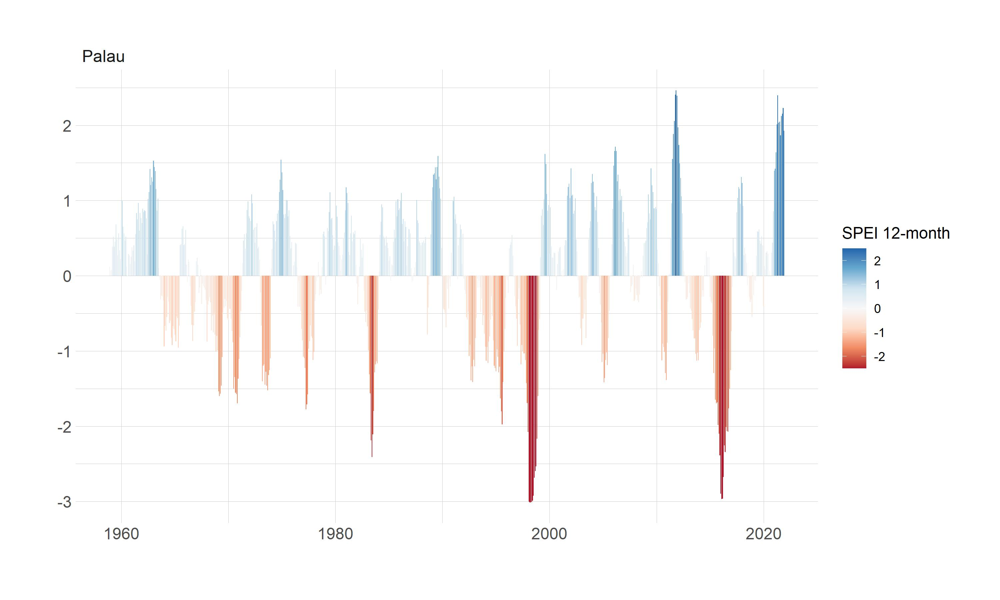
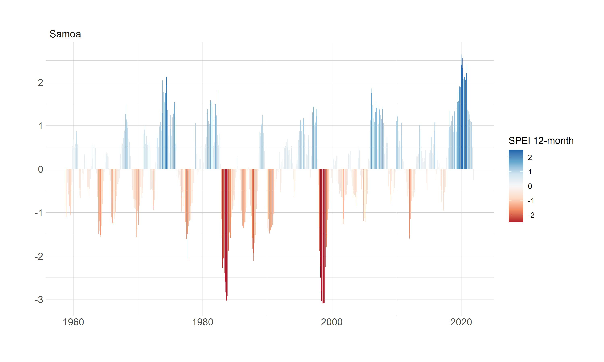
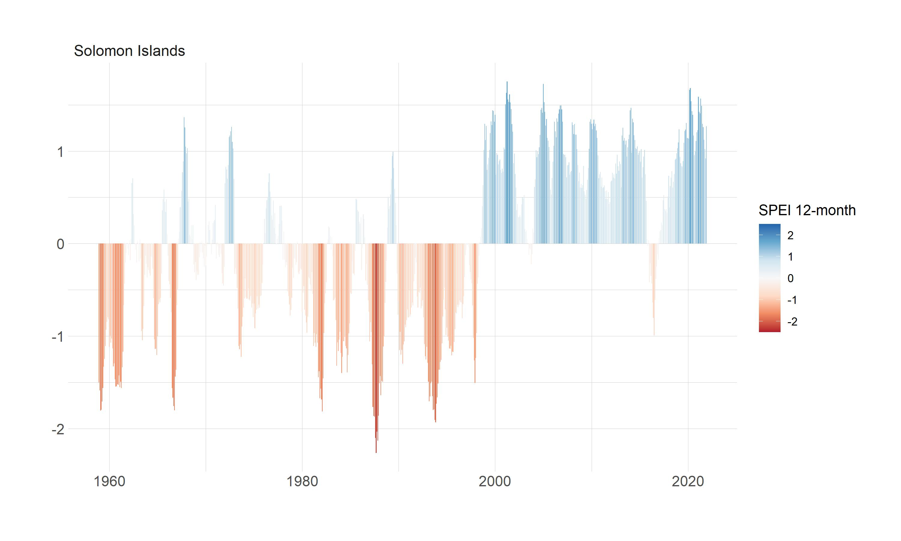
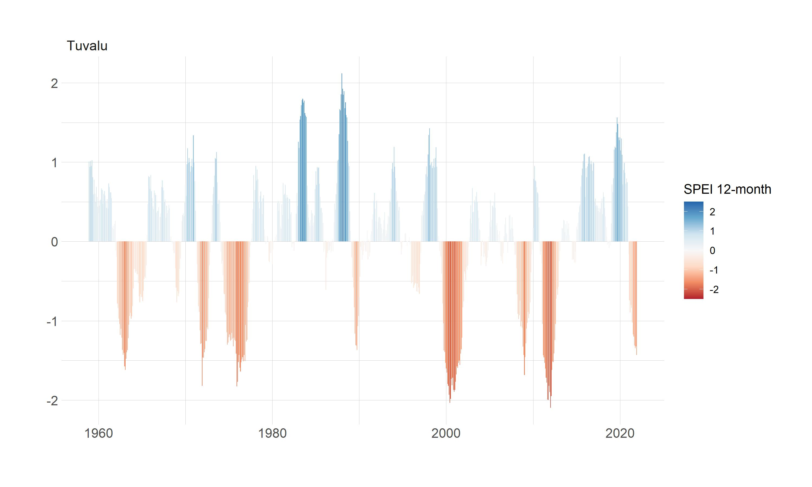
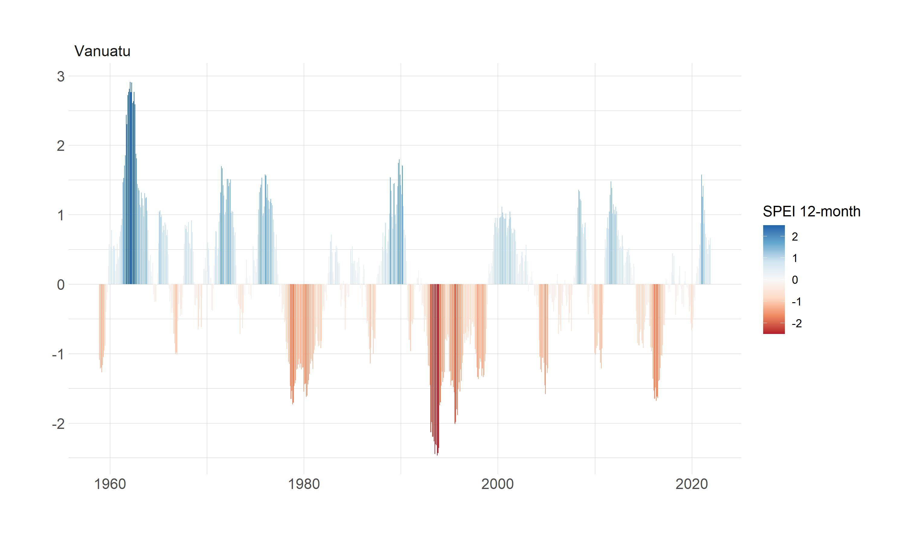

Climate Database#
Climate change poses an existential threat to many islands in the Pacific. Small island states in the region are increasingly vulnerable to extreme rainfall events, cyclones, changes in ocean circulation, and rising sea level. Climate data is a critical resource to help development actors prepare for and address the challenges of a changing environment. However, these datasets can be difficult to work with due to the technical characteristics of the raw data. They are often stored in complex time-series grid formats such as netcdf. The raw data often require additional processing steps to compute meaningful indicators, such as rainfall anomalies or drought indices. Additionally, global climate grids are typically produced at coarse spatial resolutions (~55 km), making them unsuitable to study climate dynamics in small island states.
The Global Operations Support Team (GOST) has developed tools to process a curated set of medium resolution climate datasets (5 to 10 km), producing monthly and daily raster files (geotiffs) for each climate indicator. The processing workflows were developed by Benny Istanto. The output dataset informs knowledge products and initiatives across the World Bank, including CCDRs and the Pacific Observatory. The granular and temporal characteristics of the data are intended to supplement the already extensive database from World Bank Climate Change Knowledge Portal. To learn more about the underlying data and how each index is constructed, please refer to the source documentation.
Zonal statistics#
The Pacific Observatory team has calculated statistics from the climate datasets (maximum, mean, median, and standard deviation) for each administrative level-1 area (equivalent to a state, or an atoll) and every timestep available. Sub-national boundaries were retrieved from the Pacific Community PopGIS portals and, where not available, from UN OCHA via the Humanitarian Data Exchange. The script used to calculate these statistics is available through the Pacific Observatory github repository.
The tabular time-series output and geospatial boundaries can be accessed via the following Development Data Hub entry. The table contains monthly statistics for 131 areas across 12 countries (Papua New Guinea, Federated States of Micronesia, Fiji, Kiribati, Marshall Islands, Nauru, Palau, Samoa, Solomon Islands, Tonga, Tuvalu, Vanuatu). The temporal coverage varies by indicator but extends from January 1958 to December 2021.
Variable Descriptions#
Standardized Precipitation Index#
The Standardized Precipitation Index (SPI) is a normalized index representing the probability of occurrence of an observed rainfall amount when compared with the rainfall climatology over a long-term period. This long-term record is fitted to a probability distribution, which is then transformed into a normal distribution so that the mean SPI for the location and desired period is zero.
Negative SPI values represent rainfall deficit and less than median precipitation (dry), starting at SPI values equal or below -1.0. Whereas positive SPI values indicate rainfall surplus and greater than median precipitation (wet), starting at SPI values equal or above 1.0.
Standardized Precipitation-Evapotranspiration Index#
The SPEI is an extension of the widely used SPI. The SPEI is designed to consider both precipitation and potential evapotranspiration (PET) in determining drought. Thus, unlike the SPI, the SPEI captures the main impact of increased temperatures on water demand.
The SPEI can measure drought severity according to its intensity and duration and can identify the onset and end of drought episodes. The SPEI allows comparison of drought severity through time and space, since it can be calculated over a wide range of climates, as can the SPI.
The idea behind the SPEI is to compare the highest possible evapotranspiration (what we call the evaporative demand by the atmosphere) with the current water availability. Thus, precipitation (accumulated over time) in the SPEI stands for the water availability, while ETo stands for the atmospheric water demand.
Negative SPEI values represent rainfall deficit and less than median precipitation, and high potential evapotranspiration (dry), starting with SPEI values equal or below -1.0. Whereas positive SPEI values indicate rainfall surplus and greater than median precipitation, and low potential evapotranspiration (wet), starting with SPEI values equal or above 1.0.
Consecutive Dry Days#
The number of consecutive dry days (CDD) is the largest number of consecutive days with daily precipitation amount less than a given threshold (1 or 5 mm), within a certain time. Typically, the process counts the number of consecutive days in the past 90 days.
Consecutive Wet Days#
Similarly, the number of consecutive wet days (CWD) is the largest number of consecutive days with daily precipitation amount more than 1 or 5 mm, within a certain time. Typically, the process counts the number of days in the past 90 days.
Dry Days#
The number of dry days is the largest number of days with daily precipitation amount less than 1 or 5 mm, within a certain time. Typically, the process counts the number of days within a year to measure the dry condition.
Wet Days#
The number of wet days is the largest number of days with daily precipitation amount more than 1 or 5 mm, within a certain time. Typically, the process counts the number of days within a year to measure the wet condition.
Data Visualization#
As an initial step to explore the data, the team has prepared visualizations for the 12-month SPEI drought index aggregated at the national level. The charts below display monthly SPEI values for Papua New Guinea and Kiribati, aggregated using the mean value. Each column represents a monthly value for SPEI. Blue and positive columns signify months where conditions were exceptionally wet relative to historical averages. Red and negative columns signal drought or months with exceptionally dry conditions.
The SPEI at the 12-month timescale reflects long-term weather patterns. A 12-month SPEI is a comparison of the index for 12 consecutive months relative to what was recorded in the same 12 consecutive months in all previous years of available data. Because this timescale contains the cumulative result of shorter weather patterns, the longer SPEIs tend to gravitate toward zero unless a distinctive wet or dry season is taking place. Precipitation indices for 12-month timescales are usually reflective of stream flows and reservoir levels. PNG has been relatively wet in the last 20 years, although the ENSO signal drove a significant dry period during 2015-2016. Kiribati has experienced more variability in dry/wet periods, but relatively dry conditions have persisted in the last 20 years.










Figure 1: 12-month SPEI index aggregated with mean values
Metadata#
Note
Admin variables
index: Unique identifier for each area
ADM0_NAME: Country name
ADM0_PCODE: Country code
ADM1_NAME: Administrative name
ADM1_PCODE: Administrative code from original source
year
month
date: YYYYMM
List of climate variables
spi: Standardized Precipitation Index
spei: Standardized Precipitation-Evapotranspiration Index
cdd: Consecutive dry days
cwd: Consecutive wet days
drydays: Number of dry days
wetdays Number of wet days
Rainfall thresholds (for cdd, cwd, drydays, wetdays)
1mm: 1 millimeters of rainfall per day.
5mm: 5 millimeters of rainfall per day.
List of zonal statistics
max: Maximum
mean: Mean value
std: Standard deviation
median: Median value
Variable name example (variable_parameter_zonal statistic)
Variable name: spi03_median
Description: Standardized precipitation index, 3-month window, median value